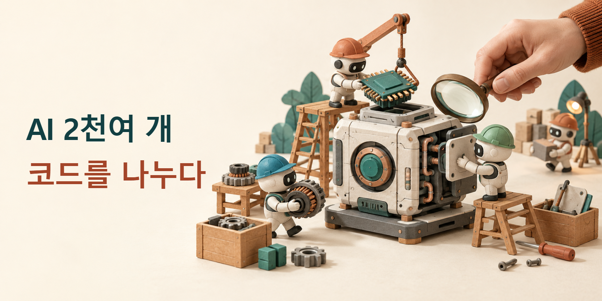

프라임 인텔렉트, AI 2천여 개로 자사 프로그램을 다시 만든 과정 공개
AI 개발 도구 회사 프라임 인텔렉트가 AI 2천여 개를 활용해 자사 프로그램 ‘프라임 에이전트(Prime Agent)’를 다시 만든 과정을 10월 9일 공개했다. 회사 제작기의 작업 그림에 표시된 AI 작업자는 2,209개다. 핵심 코드를 다른 프로그래밍 언어로 옮기는 작업에 약 2주가 걸렸다.

프라임 에이전트는 AI에게 코딩과 연구 작업을 맡기고 진행 상황을 관리하는 프로그램이다. 공개 코드의 설명에 따르면 여러 보조 AI를 불러 일을 나누고, 서로 메시지를 보내며 결과를 모을 수 있다. 이번에는 그 도구를 사용해 도구 자체를 다시 만들었다.
AI 작업을 나눈다는 말은 무엇을 뜻할까. 예를 들어 한쪽에는 화면을 만드는 코드를, 다른 쪽에는 파일을 읽는 코드를 맡길 수 있다. 각 작업은 자기 자료를 읽고 진행한 뒤 결과를 돌려준다. 한 사람이 긴 대화에서 모든 일을 차례로 지시하는 방식과 달리, 여러 작업을 동시에 진행할 수 있는 것이다.
AI 모델보다, AI가 일하는 프로그램을 바꿨다
이 도구의 바탕은 회사 연구진이 8월에 공개한 기술 보고서에서 설명했다. AI는 현재 읽는 대화 밖에도 작업 기록과 중간 계산을 보관하며, 필요한 내용을 다시 가져온다. 보조 AI끼리 자료를 주고받고 사람이 특정 작업에 들어가 방향을 수정할 수 있는 장치도 둔다.
그런 장치가 있으면 긴 일을 하다가 한 대화에 자료를 전부 넣지 못하는 문제를 다르게 다룰 수 있다. 이미 읽은 파일의 요약, 실행 결과, 아직 남은 과제를 따로 남겨 다음 작업에서 참고하게 한다. 보고서가 설명하는 개선 대상은 이런 실행 도구와 작업 기록이다. AI 모델 내부를 매번 새로 학습시키는 방식과 구분된다.
작업을 오래 이어가기 위한 기능도 있다. 공개 코드 안내는 작업 창의 연결이 끊겨도 백그라운드에서 일을 계속하고, 나중에 같은 작업에 다시 접속할 수 있다고 설명한다. 사람이 화면을 계속 열어 두는 일과 AI 작업을 유지하는 일을 나눈 것이다. 긴 작업일수록 중간 기록과 진행 상황을 남기는 기능이 중요해진다.
이번 재작성에는 러스트(Rust)라는 프로그래밍 언어를 사용했다. 러스트 공식 설명서는 메모리를 누가 사용하고 언제 정리할지 규칙으로 검사한다고 설명한다. 메모리는 실행 중인 프로그램이 자료를 잠시 올려두는 공간이다. 러스트는 정해진 규칙을 어긴 코드를 실행 파일로 만들기 전에 막는다.
예를 들어 이미 정리한 자료를 다른 작업이 계속 사용하려 한다면 문제가 생길 수 있다. 러스트의 규칙은 이런 종류의 메모리 사용 실수를 줄이는 데 쓰인다. 프로그램이 계산한 결과가 맞는지, 사용자가 원하는 화면을 보여 주는지는 별도의 시험으로 확인할 일이다. 언어의 검사와 제품의 기능 검사는 서로 맡는 일이 다르다.
작성한 AI와 검사하는 AI의 역할을 나눴다
회사 제작기는 AI에게 코드를 쓰게 하기 전에 기존 프로그램과 결과를 비교할 검사를 마련했다고 설명한다. 작업은 계획·구현·검토·실행 검증으로 나눴다. 검토나 시험에서 문제가 나오면 구현 담당에게 돌려보냈다. 사람은 우선순위와 판단을 맡았다.
한 작업이 합쳐지기까지
- 계획만들 기능과 검사 기준을 정한다.
- 구현담당 AI가 코드를 작성한다.
- 검토다른 AI가 틀린 곳을 찾는다.
- 실행 검증새 환경에서 검사하고, 실패하면 되돌린다.
이런 역할 분담을 이해하려면 작은 홈페이지 개편을 떠올리면 된다. 예를 들어 새 화면을 만드는 일과 그 화면에서 링크가 제대로 열리는지 검사하는 일은 서로 다르다. 첫 작업이 끝났다고 두 번째 작업도 끝나지는 않는다. 무엇을 바꿀지와 무엇이 유지돼야 할지를 분리하면, ‘완성했다’는 말 대신 비교 가능한 결과를 받을 수 있다.
긴 작업의 중단 기준도 필요하다. 프라임 에이전트의 기술 보고서는 작업 횟수, AI가 읽고 쓰는 글의 양, 경과 시간에 한도를 두는 실행 방식을 설명한다. 정해진 검사를 통과하면 종료하고, 실패하면 남은 한도 안에서 다시 시도한다. 보조 작업에 들어간 자원도 함께 기록한다.
이 설명에서 ‘글의 양’은 모델에 입력하고 모델이 내보내는 내용을 세는 단위인 토큰을 말한다. 같은 작업을 여러 AI가 반복하면 사람 눈에는 한 번의 요청이어도 사용량은 늘 수 있다. 따라서 작업을 많이 나누는 판단에는 결과의 품질과 함께 시간·사용량도 들어간다. ‘AI 몇 개를 불렀는가’만으로 효율을 판단하기 어려운 이유다.
14배라는 수치가 가리키는 시간
회사는 프로그램을 켠 뒤 글을 입력할 수 있기까지의 시간이 기존의 약 14분의 1로 줄었다고 발표했다. 자체 시험에서 측정한 준비 시간이다. AI 모델이 답을 계산하는 시간은 제외했다. 다른 회사 도구와의 비교도 공통 표준이 아닌 회사 시험이라는 조건을 발표문에 적었다.
핵심 재작성 뒤에는 출시 품질을 맞추는 수 주의 후속 작업이 있었다. 직원들이 실제로 쓰며 검사에서 놓친 오류를 찾았고, 사람이 수정 방향을 정하고 결과를 검토했다. 이번 사례의 ‘2주’는 이 전체 마무리 기간을 포함한 숫자가 아니다.
동시에 일하는 것과 안전하게 격리하는 것은 다르다
여러 AI가 프로그램을 고치려면 코드를 시험할 컴퓨터도 필요하다. 회사가 제공하는 프라임 샌드박스는 각각의 작업에 별도 리눅스 가상 컴퓨터를 제공하는 서비스다. 여기서 가상 컴퓨터는 하나의 물리 장비 안에 독립된 운영체제 환경을 만들어 실행하는 것을 뜻한다. 시험 코드와 바깥 시스템 사이에 경계를 두려는 구성이다.
개인 컴퓨터에 설치한 프라임 에이전트 자체는 그 격리 환경과 다르다. 프로젝트 안내는 AI가 사용자의 권한으로 명령을 실행하고 파일을 바꿀 수 있다고 밝힌다. 작업 하나의 충돌을 다른 작업과 분리하는 기능은 있어도, 위험한 코드가 개인 파일에 접근하지 못하도록 막는 보안 경계는 별도로 필요하다.
이 차이는 소규모 시험에도 중요하다. 예를 들어 홈페이지의 복사본에서 메뉴를 고치는 작업과, 실제 공개 사이트의 배포 권한까지 맡기는 작업은 영향 범위가 다르다. 처음에는 되돌릴 수 있는 복사본과 한정된 작업을 사용하는 편이 결과를 비교하기 쉽다. 이는 회사의 규모를 그대로 따라 하기보다 작은 작업에서 분업과 검사를 확인하는 활용 방법이다.
코드는 공개돼도 실행 자원은 따로 든다
프라임 에이전트 코드는 MIT 라이선스로 공개됐다. 사용·수정·배포 등을 허용하며 코드의 복사본이나 상당한 부분을 배포할 때 저작권과 허가 문구를 함께 포함하도록 한다. 이는 소프트웨어 코드에 대한 조건이다. 모델을 이용하는 구독이나 API 사용료, 별도 컴퓨터 서비스 비용은 각각의 이용 조건을 따른다.
작은 팀이 먼저 가져올 부분은 구체적인 역할과 검사 기준이다. AI에게 맡길 범위를 좁히고, 결과가 맞는지 비교한 뒤, 실제 사용 중 발견한 문제를 다시 고치는 것이다. 일을 나누는 도구와 결과를 판단하는 기준을 함께 준비하는 것이 이번 제작 사례에서 얻을 실용적인 교훈이다.
출처와 더 읽을 자료
- Prime Agent Rust 공식 제작기
- Prime Agent 공식 코드와 실행 범위
- Prime Agent 기술 보고서: 기록·작업 분담·한도
- Rust 공식 설명서: 메모리 소유권
- Prime Sandboxes 공식 구조 설명
- Prime Agent MIT 라이선스
대표 그림은 이 기사를 위해 AI로 만든 설명용 이미지다. 실제 제품 화면이나 사건 사진이 아니다. 한국어 제목은 그림과 분리해 배치했다. 본문 도표는 연결한 원문을 바탕으로 편집부가 작성했다.